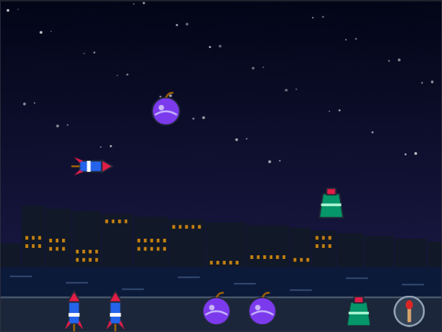
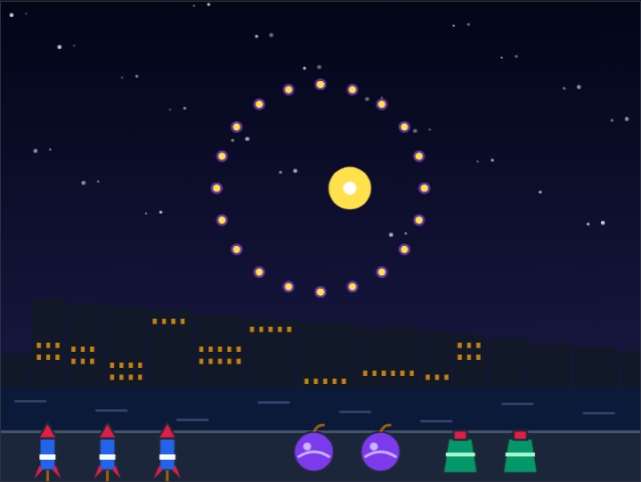
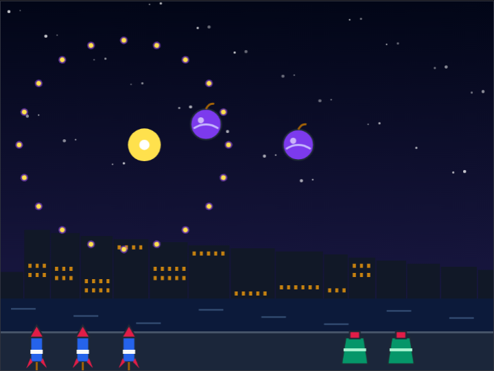
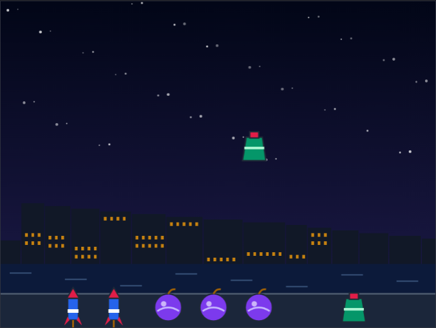
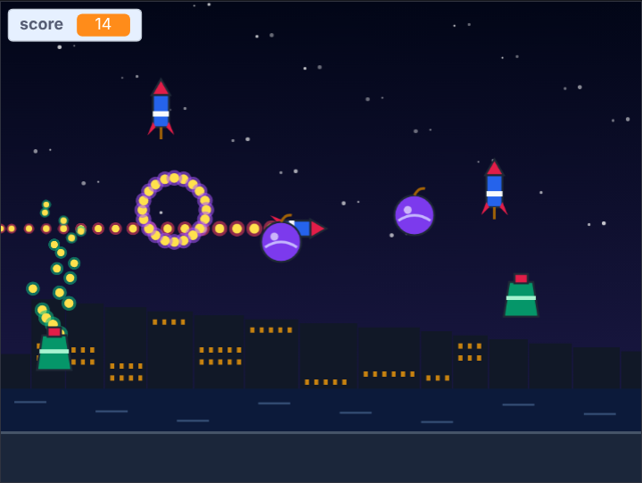

<title>Chain Spark Tutorial</title>
<meta name="claude:viewport-fit-sides" content="cover">
<link rel="preconnect" href="https://fonts.googleapis.com">
<link rel="stylesheet" href="https://fonts.googleapis.com/css2?family=Fredoka:wght@500;600&family=Atkinson+Hyperlegible:ital,wght@0,400;0,700;1,400&family=JetBrains+Mono:wght@400&display=swap">
<style>
/* Layout: one reading column; each step is a numbered section: the big idea, the blocks, a picture and a checkpoint file. */
:root {
  --bg: #f4f3fa; --surface: #ffffff; --fg: #1f1d33; --muted: #5c5a74; --line: #dddbea;
  --accent: #3b3f9e; --accent-soft: #e6e6fa; --drone: #d97706; --code-bg: #f8f7fd;
  --display: "Fredoka", "Trebuchet MS", system-ui, sans-serif;
  --body: "Atkinson Hyperlegible", "Segoe UI", system-ui, sans-serif;
  --mono: "JetBrains Mono", ui-monospace, Consolas, monospace;
}
@media (prefers-color-scheme: dark) { :root:not([data-theme="light"]) {
  --bg: #13121f; --surface: #1c1a2c; --fg: #ebe9f7; --muted: #a6a3bf; --line: #312e47;
  --accent: #a5a8ff; --accent-soft: #23244a; --drone: #fbbf24; --code-bg: #232036; color-scheme: dark; } }
:root[data-theme="dark"] {
  --bg: #13121f; --surface: #1c1a2c; --fg: #ebe9f7; --muted: #a6a3bf; --line: #312e47;
  --accent: #a5a8ff; --accent-soft: #23244a; --drone: #fbbf24; --code-bg: #232036; color-scheme: dark; }

body { background: var(--bg); color: var(--fg); font: 18px/1.6 var(--body);
  padding-left: max(16px, env(safe-area-inset-left, 0px)); padding-right: max(16px, env(safe-area-inset-right, 0px)); padding-block: 40px 72px; }
main { max-width: 760px; margin: 0 auto; display: grid; gap: 48px; }
main > *, .step > *, .stack > *, .intro > * { min-width: 0; }
h1, h2, h3 { font-family: var(--display); font-weight: 600; text-wrap: balance; margin: 0; line-height: 1.15; }
h1 { font-size: clamp(2rem, 6vw, 2.9rem); }
h2 { font-size: 1.7rem; }
h3 { font-size: 1.15rem; font-weight: 500; }
p { margin: 0; max-width: 66ch; }
a { color: var(--accent); }
code { font: 0.88em var(--mono); background: var(--code-bg); padding: 1px 5px; border-radius: 4px; overflow-wrap: anywhere; }
.eyebrow { font: 600 0.78rem var(--body); letter-spacing: 0.08em; text-transform: uppercase; color: var(--drone); }
.stack { display: grid; gap: 16px; min-width: 0; }
.intro { display: grid; gap: 14px; }
.intro p { color: var(--muted); font-size: 1.08rem; }

.plan { list-style: none; margin: 0; padding: 0; display: grid; gap: 6px; counter-reset: plan; }
.plan li { display: flex; flex-wrap: wrap; align-items: baseline; gap: 4px 12px; padding: 8px 12px; border-radius: 6px; counter-increment: plan; }
.plan li::before { content: counter(plan); font: 600 0.95rem var(--display); color: var(--muted); width: 1.4em; }
.plan .name { font-weight: 700; }
.plan a { text-decoration: none; }
.plan a:hover .name, .plan a:focus-visible .name { text-decoration: underline; }
.plan .what { color: var(--muted); flex: 1 1 220px; }

.step { display: grid; gap: 20px; border-top: 2px solid var(--line); padding-top: 32px; }
.step-head { display: flex; align-items: center; gap: 14px; }
.num { flex: none; width: 44px; height: 44px; border-radius: 50%; display: grid; place-items: center;
  background: var(--accent); color: var(--surface); font: 600 1.3rem var(--display); }
ol.do { margin: 0; padding-left: 1.3em; display: grid; gap: 8px; max-width: 66ch; }

.blocks-panel { background: var(--surface); border: 1px solid var(--line); border-radius: 8px; padding: 16px; overflow-x: auto; }
.blocks-panel .label { font: 700 0.78rem var(--body); letter-spacing: 0.06em; text-transform: uppercase; color: var(--muted); margin-bottom: 8px; }
pre.blocks { margin: 0; font: 13px var(--mono); white-space: pre; }

.note { border-left: 3px solid var(--drone); padding: 2px 0 2px 14px; color: var(--fg); }
.note b { color: var(--drone); }
figure { margin: 0; display: grid; gap: 8px; }
figure img { width: 100%; border-radius: 8px; border: 1px solid var(--line); display: block; }
figcaption { font-size: 0.9rem; color: var(--muted); }

.table-wrap { overflow-x: auto; }
table { border-collapse: collapse; font-variant-numeric: tabular-nums; min-width: 420px; }
th, td { text-align: right; padding: 6px 14px; border-bottom: 1px solid var(--line); }
th:first-child, td:first-child { text-align: left; }
th { font-size: 0.82rem; color: var(--muted); font-weight: 700; }

.checkpoint { display: flex; flex-wrap: wrap; align-items: center; gap: 10px 16px; background: var(--surface);
  border: 1px solid var(--line); border-radius: 8px; padding: 12px 16px; }
.checkpoint p { flex: 1 1 260px; color: var(--muted); font-size: 0.95rem; }
.btn { display: inline-block; font-weight: 700; text-decoration: none; color: var(--surface); background: var(--accent);
  padding: 8px 16px; border-radius: 6px; white-space: nowrap; }
.btn:hover, .btn:focus-visible { outline: 3px solid var(--accent-soft); outline-offset: 1px; }
.try { margin: 0; padding-left: 1.3em; display: grid; gap: 6px; }
svg.coords text { font: 11px var(--body); fill: var(--muted); }
.scripts { display: flex; flex-wrap: wrap; gap: 12px; align-items: flex-start; }
.scripts .blocks-panel { flex: 0 1 auto; max-width: 100%; min-width: 0; }
.tag { font-size: 0.7rem; font-weight: 700; letter-spacing: 0.04em; padding: 1px 7px; border-radius: 999px; margin-left: 6px; }
.tag.new { background: var(--accent); color: var(--surface); }
.tag.changed { border: 1px solid var(--drone); color: var(--drone); }
.flow { list-style: none; margin: 0; padding: 0; display: flex; flex-wrap: wrap; gap: 8px; counter-reset: none; }
.flow li { display: grid; gap: 2px; padding: 10px 14px; border-radius: 8px; background: var(--surface); border: 1px solid var(--line);
  flex: 1 1 130px; min-width: 0; position: relative; }
.flow li b { font: 600 1.05rem var(--display); color: var(--accent); }
.flow li span { font-size: 0.85rem; color: var(--muted); }
footer { color: var(--muted); font-size: 0.92rem; border-top: 2px solid var(--line); padding-top: 24px; }
.idea { background: var(--accent-soft); border-radius: 8px; padding: 12px 16px; display: grid; gap: 4px; max-width: 66ch; }
.make { display: grid; gap: 4px; max-width: 66ch; font-size: 0.95rem; }
.make b { color: var(--drone); }
.idea b { font: 600 1rem var(--display); color: var(--accent); }
</style>

<main>
  <header class="intro">
    <span class="eyebrow">Scratch tutorial for kids (9+) · 6 short steps · one custom block</span>
    <h1>Chain Spark</h1>
    <p>Put on a fireworks show! Drag rockets, shells and fountains into the night sky, turn them, then light just one. Every burst sets off the fireworks it reaches, so one match can light the whole sky. Plan a long chain: the longer the show, the more points.</p>
    <p>Every step is a game you can play, and every step has a file you can download if you get stuck. You need the Scratch editor: <a href="https://scratch.mit.edu/projects/editor/">scratch.mit.edu/projects/editor</a>.</p>
    <div class="checkpoint">
      <p>Start here: the starter project has the fireworks, the sparks, the match and the night sky. No code yet.</p>
      <a class="btn" href="https://github.com/AJosephsen/MyTemporaryJunk/raw/main/scratch/tutorials/chain-spark/starter.sb3">Download starter.sb3</a>
    </div>
  </header>

  <section class="stack" aria-label="Steps">
    <h3>The steps</h3>
    <ol class="plan">
      <li><a href="#step-1"><span class="name">Place</span></a><span class="what">Drag and turn</span></li>
      <li><a href="#step-2"><span class="name">Light</span></a><span class="what">Clones copy their parent</span></li>
      <li><a href="#step-3"><span class="name">Chain reaction</span></a><span class="what">Touching color</span></li>
      <li><a href="#step-4"><span class="name">Rockets and fountains</span></a><span class="what">If costume name = …</span></li>
      <li><a href="#step-5"><span class="name">Score</span></a><span class="what">Points and show time</span></li>
      <li><a href="#step-6"><span class="name">The finale</span></a><span class="what">The end of the show</span></li>
    </ol>
  </section>

  <section class="step" id="step-1">
    <div class="step-head"><span class="num">1</span><h2>Place</h2></div>
    <div class="idea"><b>Big idea: drag and turn</b><span>Eight fireworks wait in a tray along the bottom: 3 rockets, 3 shells and 2 fountains. They are <b>clones</b> of one Firework sprite, made by the green flag. <b>set drag mode draggable</b> lets you drag them into the sky, and <b>when this sprite clicked</b> turns one <b>45 degrees</b>.</span></div>
    <p class="make"><span><b>Make:</b> a variable <code>role</code>, for this sprite only.</span></p>
    <!--changed:1-->
    <ul class="do">
      <li>A click turns, a drag moves: Scratch only counts a click when the sprite was not dragged.</li>
      <li>Rockets and fountains are drawn pointing right. That is Scratch's direction 90, so <b>move</b> goes the way they point. Each clone starts with <b>point in direction 0</b>, which is up.</li>
    </ul>
    <figure>
      
      <figcaption>Drag fireworks into the sky; click one to turn it.</figcaption>
    </figure>
    <div class="checkpoint">
      <p>Stuck? This is the project at the end of step 1.</p>
      <a class="btn" href="https://github.com/AJosephsen/MyTemporaryJunk/raw/main/scratch/tutorials/chain-spark/step1.sb3">Download step1.sb3</a>
    </div>
  </section>
  <section class="step" id="step-2">
    <div class="step-head"><span class="num">2</span><h2>Light</h2></div>
    <div class="idea"><b>Big idea: clones copy their parent</b><span>Press Space and the match becomes a bright yellow flare. A shell touching it bursts: it becomes a spark and makes <b>clones of itself</b>, turning 18° before each one. Every clone copies the direction its parent had when it was made, so 20 sparks fly out in a ring.</span></div>
    <p class="make"><span><b>Make:</b> the variable <code>phase</code>, and a block <b>burst (n)</b> with <b>run without screen refresh</b> ticked.</span></p>
    <!--changed:2-->
    <ul class="do">
      <li>Why a block? A <b>repeat</b> loop in Scratch waits a frame between turns, so the ring would come out as a slow spiral. A block that runs <b>without screen refresh</b> makes all 20 sparks at once.</li>
      <li>A spark knows it is a spark from its <b>role</b>, which the clone copied too.</li>
    </ul>
    <figure>
      
      <figcaption>Space: the shell bursts into a ring.</figcaption>
    </figure>
    <div class="checkpoint">
      <p>Stuck? This is the project at the end of step 2.</p>
      <a class="btn" href="https://github.com/AJosephsen/MyTemporaryJunk/raw/main/scratch/tutorials/chain-spark/step2.sb3">Download step2.sb3</a>
    </div>
  </section>
  <section class="step" id="step-3">
    <div class="step-head"><span class="num">3</span><h2>Chain reaction</h2></div>
    <div class="idea"><b>Big idea: touching color</b><span>A firework now goes off when it <b>touches the sparks' yellow</b>. Every spark has the same bright yellow centre, and so does the match's flare. That one block makes the whole chain reaction work.</span></div>
    <p class="make"><span><b>Make:</b> nothing new: the block <b>touching Match</b> becomes <b>touching color</b>.</span></p>
    <!--changed:3-->
    <ul class="do">
      <li>Sparks shrink as they fly instead of fading. A see-through spark is not quite that yellow any more, and it would not set anything off!</li>
      <li>Put two shells close together, then far apart. How far does a burst reach?</li>
    </ul>
    <figure>
      
      <figcaption>One burst sets off the next.</figcaption>
    </figure>
    <div class="checkpoint">
      <p>Stuck? This is the project at the end of step 3.</p>
      <a class="btn" href="https://github.com/AJosephsen/MyTemporaryJunk/raw/main/scratch/tutorials/chain-spark/step3.sb3">Download step3.sb3</a>
    </div>
  </section>
  <section class="step" id="step-4">
    <div class="step-head"><span class="num">4</span><h2>Rockets and fountains</h2></div>
    <div class="idea"><b>Big idea: if costume name = …</b><span>Each firework checks its <b>costume name</b> to know what it is. A <b>rocket</b> flies its way and leaves a trail of sparks, which is a long fuse across the sky. Then it pops. A <b>fountain</b> sprays sparks the way it points for a few seconds.</span></div>
    <p class="make"><span><b>Make:</b> a variable <code>aim</code>, for this sprite only.</span></p>
    <!--changed:4-->
    <ul class="do">
      <li>The rocket's trail: <b>turn 180</b>, make a spark clone, then turn back. The sparks fly backwards from the rocket.</li>
      <li>The fountain remembers its direction in <b>aim</b>, then points a little to either side for each spark.</li>
    </ul>
    <figure>
      
      <figcaption>Rockets carry the chain; fountains keep it going.</figcaption>
    </figure>
    <div class="checkpoint">
      <p>Stuck? This is the project at the end of step 4.</p>
      <a class="btn" href="https://github.com/AJosephsen/MyTemporaryJunk/raw/main/scratch/tutorials/chain-spark/step4.sb3">Download step4.sb3</a>
    </div>
  </section>
  <section class="step" id="step-5">
    <div class="step-head"><span class="num">5</span><h2>Score</h2></div>
    <div class="idea"><b>Big idea: points and show time</b><span>Every firework that goes off scores: a rocket 1, a fountain 3, a shell 5. And while the show is on, every half second each burning firework adds a point. <b>burning</b> counts them: +1 when one starts, −1 when it is done.</span></div>
    <p class="make"><span><b>Make:</b> the variables <code>score</code>, <code>burning</code> and <code>fired</code>.</span></p>
    <!--changed:5-->
    <ul class="do">
      <li>Pack them close and they all go off at once: a short show. Spread them out and link them with rockets: a long show!</li>
      <li>The Stage keeps adding show-time points <b>until burning = 0</b>.</li>
    </ul>
    <figure>
      
      <figcaption>Long shows score more.</figcaption>
    </figure>
    <div class="checkpoint">
      <p>Stuck? This is the project at the end of step 5.</p>
      <a class="btn" href="https://github.com/AJosephsen/MyTemporaryJunk/raw/main/scratch/tutorials/chain-spark/step5.sb3">Download step5.sb3</a>
    </div>
  </section>
  <section class="step" id="step-6">
    <div class="step-head"><span class="num">6</span><h2>The finale</h2></div>
    <div class="idea"><b>Big idea: the end of the show</b><span>When nothing burns any more, the show is over and the match tells you your score. If all eight fireworks went off, there is a <b>finale bonus</b> of 50 points.</span></div>
    <p class="make"><span><b>Make:</b> nothing new.</span></p>
    <!--changed:6-->
    <ul class="do">
      <li>This is the whole game. Try to make the longest chain you can!</li>
    </ul>
    <figure>
      
      <figcaption>A fountain lights a rocket, the rocket lights the shells: all eight go off.</figcaption>
    </figure>
    <div class="checkpoint">
      <p>Stuck? This is the project at the end of step 6.</p>
      <a class="btn" href="https://github.com/AJosephsen/MyTemporaryJunk/raw/main/scratch/tutorials/chain-spark/step6.sb3">Download step6.sb3</a>
    </div>
  </section>

  <section class="stack">
    <h3>Make it your own</h3>
    <ul class="try">
      <li>A bigger burst: <b>burst 30</b>. How far apart can the shells be now?</li>
      <li>More fireworks in the tray, or fewer: can you still light them all?</li>
      <li>A crossette: a shell whose 4 sparks each make a small burst of their own when they stop.</li>
      <li>Add a sound for each kind of firework: a whoosh for rockets, a boom for shells.</li>
    </ul>
  </section>

  <footer>Made with the Scratch workbench in this repository. The blocks on this page are drawn from the real project files, so they always match the downloads; the last step is the finished game.</footer>
</main>

<script src="https://cdn.jsdelivr.net/npm/scratchblocks@3.6.4/build/scratchblocks.min.js"></script>
<script>
  scratchblocks.renderMatching("pre.blocks", { style: "scratch3", languages: ["en"], scale: 0.75 });
</script>
